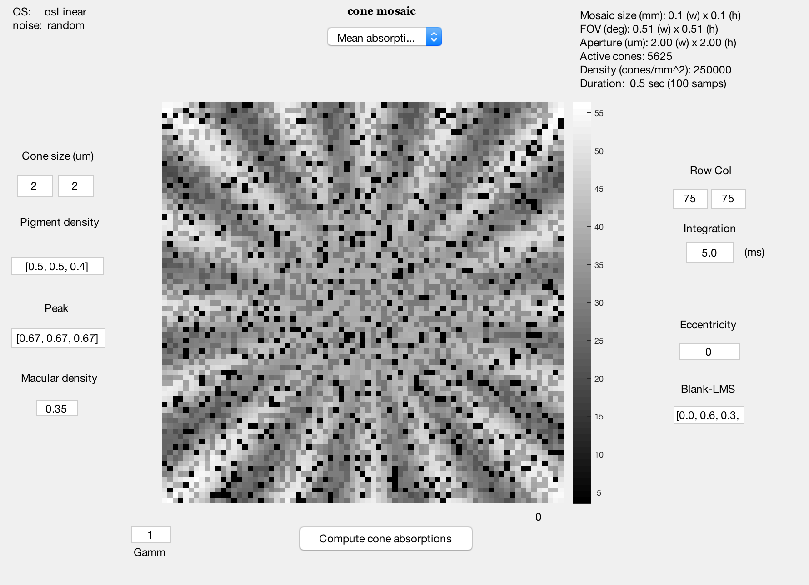

Cone mosaic object - introduction
Contents
ieInit
% clear variables
Build a scene and oi for computing
s = sceneCreate('rings rays'); s = sceneSet(s,'fov',1); ieAddObject(s);
oi = oiCreate;
oi = oiCompute(oi,s);
ieAddObject(oi); % oiWindow;
Build a default cone mosaic and compute the OI
cMosaic = coneMosaic; % Create the object cMosaic.setSizeToFOV(0.5*sceneGet(s,'fov')); % Show about half the scene cMosaic.emGenSequence(100); cMosaic.compute(oi); cMosaic.window;
To compute the bipolar response
bp = bipolar(cMosaic); bp.set('sRFcenter',1); bp.set('sRFsurround',1); bp.compute(cMosaic);
% bp.plot('response'); % bp.plot('movie response');
%% To compute an RGC response % Build rgc clear params params.name = 'Macaque inner retina 1'; % This instance params.eyeSide = 'left'; % Which eye params.eyeRadius = 1; % Radius in mm params.eyeAngle = 90; % Polar angle in degrees
% ir = irCreate(bp, params); ir.mosaicCreate('model','GLM','type','on midget'); % Some testing of the new rgc get and set organization % ir.mosaic{1}.get('cell type') % ir.mosaic{1}.get('rf diameter') % ir.mosaic{1}.get('srf center') % ir.mosaic{1}.get('srf surround') % ir.mosaic{1}.get('generator function') % % ir.mosaic{1}.set('number trials',1)
% Number of repeated trials % ir.mosaicCreate('model','lnp','type','on midget'); % ir.mosaic{1}.set('numberTrials',3);
fprintf('Cell array size: %d x %d\n',ir.mosaic{1}.get('mosaic size'));
%% Compute RGC response tic; ir = irCompute(ir, bp, 'coupling',false); toc
% tic; % ir = irCompute(ir, bp, 'coupling',true); % toc
lastTime = ir.mosaic{1}.get('last spike time');
ir.mosaic{1}.set('dt',1); psth = ir.mosaic{1}.get('psth');
clear params params.vname = fullfile(isetbioRootPath,'local','vernier.avi'); param.FrameRate = 5; params.step = 2; params.show = false; ieMovie(psth,params);
%% % irPlot(ir, 'mosaic'); % irPlot(ir, 'linear'); irPlot(ir, 'raster','cell',[5,7]); % irPlot(ir, 'raster'); % Can be very long and painful. Fix it in the plot % irPlot(ir, 'mosaic');
% irPlot(ir, 'psth');
%% Download an absorption movie and compute
rd = RdtClient('isetbio'); rd.crp('/resources/data/istim');
% Test for download data = rd.readArtifact('barMovie','type','mat'); cMosaic = data.iStim.cMosaic; cMosaic.computeCurrent;
cMosaic.window;
% The object is stored without the current. So compute it now. cMosaic.computeCurrent;
bp = bipolar(cMosaic.os); bp.compute(cMosaic.os); bp.plot('movie response')
%% Inner retina clear params params.name = 'Macaque inner retina 1'; % This instance params.eyeSide = 'left'; % Which eye params.eyeRadius = 1; % Radius in mm params.eyeAngle = 90; % Polar angle in degrees
% % Fix this. % Fix the other ganglion cell classes (e.g. off midget doesn't run). % Error using rgcLNP % Cannot define property 'responseSpikes' in class 'rgcLNP' because the property has already been defined in the superclass % 'rgcMosaic'.
ir = irCreate(bp, params); ir.mosaicCreate('model','GLM','type','on midget');
tic; ir = irCompute(ir, bp, 'coupling',false); toc
ir.mosaic{1}.set('dt',1); psth = ir.mosaic{1}.get('psth');
clear params params.vname = fullfile(isetbioRootPath,'local','barmovie.avi'); param.FrameRate = 1; params.step = 1; params.show = false; ieMovie(psth,params);